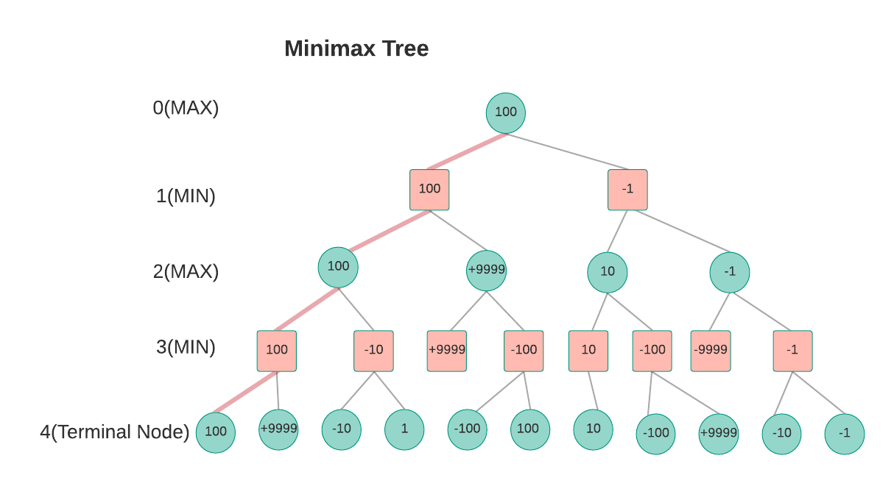
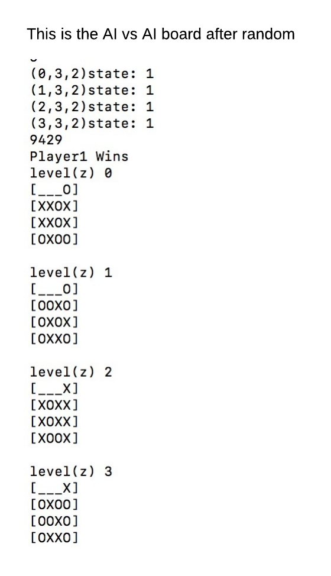

Problem Definition
Our goal is to create a AI system that implements minimax algorithm and heuristic evaluation for a 4x4x4 3D tic tac toe game. Our AI system should win every time against random move AI. In order to improve the efficiency of our minimax algorithm, we should also add a Alpha beta pruning to our minimax function to decrease our calculation workload.
Method and Implementation
Player 1 is the AI player and Player 2 is the Random-Moved player that we play against.
The important files we’re working with include:
minimax function:
The purpose of the minimax is to minimize maximum possible loss.The algorithm evaluates the leaf nodes (terminating “gameover” nodes or at maximum depth) using the heuristic evaluation function.
In this programming assignment, we implement a minimax system as well as

function minimax(node, depth, maximizingPlayer)
if depth = 0 or node is a terminal node then
return the heuristic value of node
if maximizingPlayer then
value := −∞
for each child of node do
value := max(value, minimax(child, depth − 1, FALSE))
return value
else (* minimizing player *)
value := +∞
for each child of node do
value := min(value, minimax(child, depth − 1, TRUE))
return value
heuristic evaluation function:The basic idea behind the evaluation function is to give a high value for a board if maximizer‘s turn or a low value for the board if minimizer‘s turn. We Create a EvaluateBoard() function to evaluate the heuristic value of the whole board. The positive result suggest that Player 1 have advantage while negative value suggest that player 2 have the advantage.Pseudo-code is as below:
EvaluateBoard(board){
score=0;
for each line L{
score+=evaluateLine(L)
}
return score}
We also create a evaluateLine() to evaluate the heuristic value of a line.* +9999 for EACH 4-in-a-line for AI * +100 for EACH 3-in-a-line for AI. * +10 for EACH two-in-a-line (with a empty cell) for AI. * +1 for EACH one-in-a-line (with two empty cells) for AI. Negative scores for opponent, i.e.,-9999, -100, -10, -1 for EACH opponent's 4-in-a-line,3-in-a-line, 2-in-a-line and 1-in-a-line. 0 otherwise (empty lines or lines with both computer's and opponent's seeds)Pseudo-code is as below:
evaluateLine(Line){
if 4 player 1 position in the line
return +9999
if 4 player 2 position in the line
return -9999
if 3 player 1 position in the line
return 100
if 3 player 2 position in the line
return -100
if 2 player 1 position in the line, 0 or 1 player 2 position in the line
return 10
if 2 player 2 position in the line, 0 or 1 player 1 position in the line
return -10
if 1 player 1 position in the line, 0 player 2 position in the line
return 1
if 1 player 2 position in the line, 0 player 1 position in the line
return -1
return 0
}
We find all potential 76 line and add up the line evaluation score to form a final board score.
Sample Results
Evaluation and Analysis
We notice that the output that board provide are very “similar” that is because of this line of code in minimax:
if(value>=maxres){
myNextMove = tem;
maxres = value; //That means that we always choose the last MAX value;
}
In order to make our code more “Human” We introduce random. If two value are the same, there are 50 percent chance that we choose the next max value
if(value>maxres) {
myNextMove = tem;
maxres = value;
}
if(value==maxres) {
Random rand = new Random();
int x = rand.nextInt(2);
if(x==1) {
myNextMove = tem;
maxres = value;
}
}

Time Used:
Before Alpha-beta pruning, The AI vs random game takes 3 min to finish.After Alpha-beta pruning, The AI vs random game takes 30s finish.
This is because Alpha-beta pruning greatly decrease the calculation and make our program much efficient.
After the code updated, the win rate of player 1 decrease from 76 to 55.
Conclusions
We believe that it is fairly easy to implement a AI system that defeat a random AI player. However, it is hard to make a AI system organicaly, more human. The performance of the naïve minimax algorithm may be improved dramatically, without affecting the result, by the use of alpha-beta pruning. Other heuristic pruning methods(progressive deepening etc) can also be used, but not all of them are guaranteed to give the same result as the un-pruned search.
Credits and Bibliography
https://www3.ntu.edu.sg/home/ehchua/programming/java/javagame_tictactoe_ai.html#zz-1.5 Lab notes